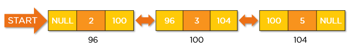

A linked list is a linear data structure. In which we can sequentially store the data. Unlike an array linked list is a dynamic data structure the size of a linked list can grow or shrink depending on the situation.
However, in the case of Arrays, we need to predefine the size and we can’t add more items than the max size defined.
LINK LIST REPRESENTATION
The element of a linked list is called a node. Every element or node contains two main entities first entity is the information or the data whereas the second entity is the pointer to the next node.
The structure of the linked list is like a train. A linked list has the following components –
Data: Data is the value stored in it, it could be anything an integer or a string or anything else really.
Pointer (Link)Each linked list contains a pointer which points to address of the next node in the linked list train.
Apart from this the following are also keywords used in linked lists –
Node – Any single unit of a linked list, its data and pointer(s), is called a node.
Head: First is the head who is defined the beginning of the list.
Tail: second is tail which defined end of the list.
Why we use Linked List in Data Structure?
Generally for storage arrays are used. But, there are many many disadvantaged with arrays –
Fixed Size
The size of the array is fixed and needs to be pre-defined
1.Example – int a[10]; or int a[ ] = {1, 2, 3, 4, 5}
2.We can’t declare an array without declaring the size.
Memory wastage (Not Optimised)
If you declare an array of size 10 and just assign values to first two elements
The memory is allocated to all of them even though, we may not end up using them.
Need for Contiguous Memory
Arrays need Contiguous memory, which some times is bad
1.Example – Consider there are only three memories of size 10, 10 and 400
2.We need to store an array of size 15
3.In this case, the array will use memory location is size 400 and not combine memory A and B of size 10 and 10 respectively.
4.Thus wasting a lot of memory
Inserting in Array is expensive
Let us say you have an array a[] = {10, 20, 40, 60, 80} and we need to add 50 in a same sorted format.
Then, we have to move all elements after 40 to one additional position
Also, same goes for deletion if we want to delete 20. Then all elements after it have to be moved to one position in the opposite direction.
Advantages of Link-list
Ease of insertion and deletion.
Dynamic Size
Disadvantages of Link-list
We have to search elements linearly, and can’t do random access
We can’t do efficient searches like binary search
Linked lists are not cache friendly as arrays are stored in contigious format they can be cached easily
Loss of data threat is there, if we lose one pointer location the rest of linked list can’t be accessed.
Extra space for pointers is needed
TYPES OF LINK-LIST
There are four key types of linked lists:
Singly linked lists
Doubly linked lists
Circular linked lists
Circular doubly linked lists
Singly Linked List
A singly linked list is a unidirectional linked list. So, you can only traverse it in one direction, i.e., from head node to tail node.
Doubly Linked List

A doubly linked list is a bi-directional linked list. So, you can traverse it in both directions. Unlike singly linked lists, its nodes contain one extra pointer called the previous pointer. This pointer points to the previous node.
Circular Linked List
A circular Linked list is a unidirectional linked list. So, you can traverse it in only one direction. But this type of linked list has its last node pointing to the head node. So while traversing, you need to be careful and stop traversing when you revisit the head node.
Circular Doubly Linked List
circular doubly linked list is a mixture of a doubly linked list and a circular linked list. Like the doubly linked list, it has an extra pointer called the previous pointer, and similar to the circular linked list, its last node points at the head node. This type of linked list is the bi-directional list. So, you can traverse it in both directions.
Applications of Different Types of Linked Lists
A linked list is used to implement stack and queues
A linked list is used to represent sparse matrices
You can implement an image viewer using a circular linked list
You can use the linked list concept to navigate through web pages
You can use a circular doubly linked list to implement a Fibonacci heap